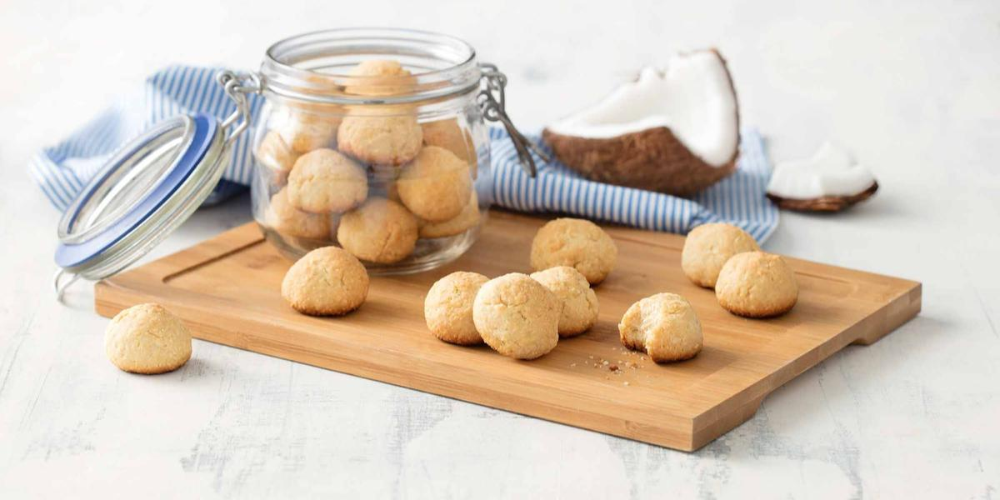

Cookies de coco

Ingredientes
- 200 g de manteiga em temperatura ambiente
- 2 gemas
- 395g de leite condensado
- 2 e meia xícaras (chá) de coco seco ralado (150 g)
- raspas da casca de 1 limão
- 2 e meia xícaras (chá) de farinha de trigo
- meia colher (chá) de fermento em pó
- 1 pitada de sal
Modo de preparo
-
Em uma batedeira, bata ligeiramente a manteiga e acrescente aos poucos
as gemas dos ovos e o leite condensado, em fio, até obter um creme bem
leve e esbranquiçado (aproximadamente 20 minutos batendo em velocidade
média).
-
Desligue a batedeira e junte o coco ralado e as raspas de limão,
misturando tudo delicadamente com uma colher de cabo longo.
-
Peneire sobre o creme a farinha de trigo, o fermento e o sal,
misturando cuidadosamente, até que os ingredientes secos estejam bem
incorporados ao creme.
-
Em 2 assadeiras grandes untadas com manteiga, coloque pequenas porções
de massa (use como medida 1 colher (chá) bem cheia de massa), mantendo
uma distância de aproximadamente 5 cm entre cada porção.
-
Leve ao forno médio (180°C), preaquecido, por cerca de 25 minutos ou
até ficarem dourados. Sirva.
- Rendimento:90 porções